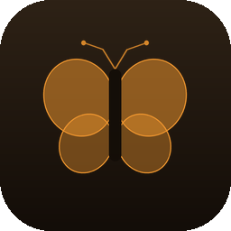
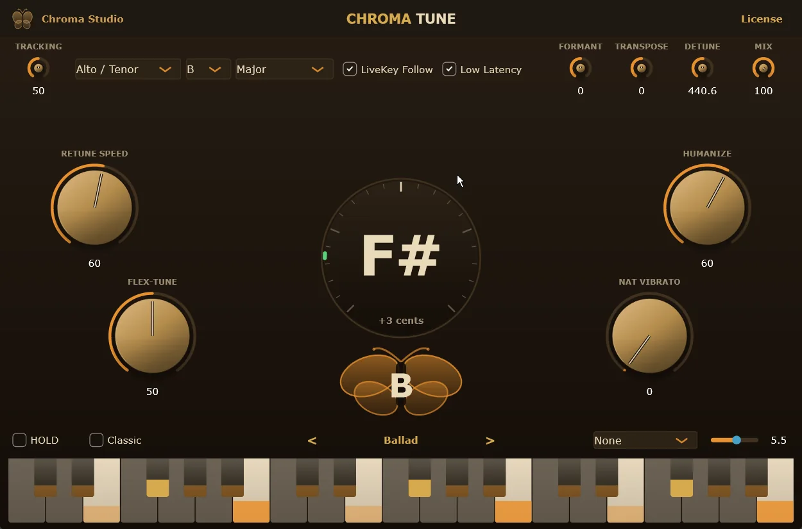
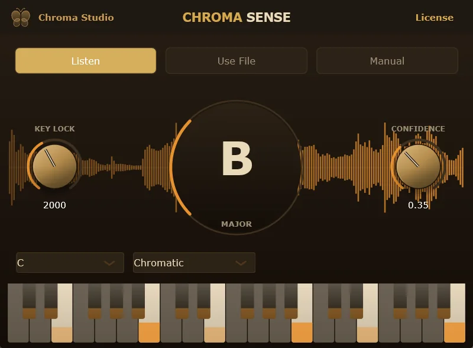

AuraLink Studio / Chroma Studio

正式版 v1.2.0 · Windows · macOS · VST3Chroma Sense 听伴奏就知道这首歌在什么调上。Chroma Tune 立刻接过这个调，照着修人声 —— 不用自己试调，不用点发送，也不用记音阶里有哪些音。两款 VST3 插件，直接在你现在用的 DAW 里跑。

修人声最费时间的不是拧旋钮，而是弄清这首歌在什么调，并且整场都守住这个调。这一步正是这对插件替你做掉的。
当前唱的音与偏差（cents）就在界面正中 —— 指针指向 12 点即为准，扫一眼就知道。
Hard Tune、Modern Pop、Transparent、Barely There、Ballad、Robot 与默认设置 —— 两个箭头就能切换，不用从头调起。
把当前设置存成有名字的预设，保存在本机，关掉 DAW 再打开仍在。
调整共振峰改变音色，按半音整体移调，并按你想要的比例混合原声与修过的声音。
自选波形与速率添加颤音，给那些还太平的长音加点起伏。
女高音、中音／男高音、低音男声或乐器 —— 选对类型，跟音会明显更稳。
把 Sense 放在伴奏总线上，它边听边锁定调性。KEY LOCK 决定一个调要保持多久才允许改变，CONFIDENCE 决定要多有把握才公布 —— 两者一起，编配单薄的段落里调性也不会乱跳。

安装程序会把两款插件装进标准 VST3 目录 —— 打开 DAW 重新扫描，列表里就有 Chroma Sense 与 Chroma Tune。需要激活时，在插件里点 License，复制 Machine ID 发给我们换取密钥；一次激活即可在该机器上同时使用两款插件。